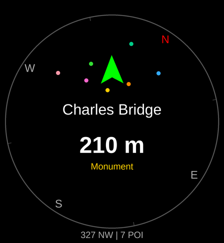

What's that place I'm looking at? Ahead names the landmark in front of you. Point your wrist, and the watch shows the place you are facing with its name, distance and type. Turn around and it updates to whatever you face now.
Screenshots

What you see
- The place in front of you, large, with a direction arrow that turns green when you point straight at it.
- Nearby places as coloured dots on a compass ring.
- A detail page with the type, distance and bearing, street address and coordinates, and a link that opens the place on your phone.
- A list of everything nearby, sorted by distance, ahead of you or all around (360°).
- A glance that shows the place in front of you right from the watch face.
Places
Viewpoints and attractions, parks and nature, monuments and memorials, castles and forts, ruins and archaeological sites, places of worship, museums and galleries, theatres and cinemas, restaurants, cafés and bars. Turn each category on or off on the watch or in the phone settings. A one-off filter shows just one category (for example only restaurants) without changing your settings.
In a city Ahead looks only a few dozen metres around you; in the countryside the search widens until it finds enough places, up to the search distance you choose in the menu (1 km by default, up to 10 km). It remembers the places it found last time, so when you open it again nearby they are on the screen at once.
Pick a place from the list and the arrow keeps pointing at it as you walk, until you clear the lock.
How to use
- Start Ahead outdoors and wait for GPS ("Acquiring GPS"), or tap "Use last known" to start right away from your last position.
- Point the watch where you are looking. The place in front of you is shown large.
- Tap the screen (or press Start) for the detail page. Start on the detail page locks the place as your target.
- Swipe up for the list of nearby places, swipe down for a one-off category filter, and swipe in from the right edge for the menu (categories, refresh, compass calibration, About).
Requirements
- A Garmin watch with GPS and a compass (magnetometer).
- A paired phone with Garmin Connect and an internet connection. Places are looked up online.
Supported watches: Venu X1, Venu 2/2 Plus/2S/3/3S, Venu Sq 2, vívoactive 5, Forerunner 165/255/255S/265/265S/955/965, fēnix 7/7S/7X, epix (Gen 2).
FAQ
- The arrow points the wrong way.
- Calibrate the compass: menu → Calibrate compass, then draw a figure eight with your arm. If it stays wrong, calibrate the compass in the watch settings (Sensors → Compass), away from metal.
- It says "no phone" or shows an error.
- Ahead needs a connection to your phone with Garmin Connect running and internet access.
- I see nothing nearby.
- Check that some categories are turned on (menu → Filters). In remote places there may simply be no mapped places within the search distance; increase it in the menu (up to 10 km).
- Where does the data come from?
- From OpenStreetMap, the free map edited by volunteers. If a place is missing or wrong, you can fix it on openstreetmap.org.
Support the app
Ahead is free and has no ads. If you enjoy it, you can support its development with a donation.
Contact
Questions and bug reports: garmin.dev@leisoft.cz
Credits
Map data © OpenStreetMap contributors, available under the Open Database License (ODbL). Place search: Photon by komoot.